Attrezzatura a disco
Erpice per uva regolabile
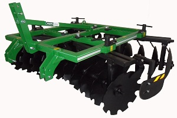Equipaggiamento standard
- Attacco a punti di II cat.
- Rebbio centrale
- Regolazione meccanica dell'inclinazione
- Regolazione meccaniche di 4 treni dischi
- Regolazione meccaniche di 4 treni dischi
- Raschiaterra regolabile su ogni dischi
- Supporti con cuscinetti ingrassabili
Equipaggiamento opzionale
- Dischi 610x5
- Distanza tra i dischi 230 mm
- Protezioni laterali smontabili
- Supporti "Till extreme" (senza manutenzione)
Erpice di vite a campo aperto
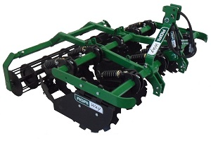Equipaggiamento standard
- Attacco a tre punti di II cat.
- Raschiatori regolabili su ciascun disco
- Dischi anteriori dentati et posteriori lisci
- Regolazione meccanica dell'angolo di lavoro
Equipaggiamento opzionale
- Dischi diam 610mm
- Dischi lisci anteriori e dischi dentati posteriori
- Dischi touti dentati o touti lisci
Erpici offset trainati su ruote
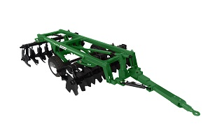Equipaggiamento standard
- molla ammortizzatore
- Registrazione idraulica barra di tiro
- Intoppo con occhione girevole
- Ruote di trasporto con sollevamento idraulico
- Supporti con cuscinetti a sfera sui modelli TVE
- Supporto con cuscinetti a rulli conici sui modelli THE-F
Equipaggiamento opzionale
- Regolazione meccanica del timone
- Supporti con cuscinetti a rulli conici sui modelli TVE
Erpice offset portato-trainato
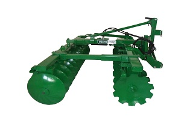Equipaggiamento standard
- Attacco a 3 punti e barra di trazione
- Supporto flangiato con cuscinetti a sfera
- Raschiatori regolabili su ciascun disco
- Regolazione idraulica del treno del disco
- Dischi anteriori dentati et posteriori lisci (standard d.560 mm or 610 mm)
Equipaggiamento opzionale
- Dischi normali nella banda anteriore e dischi dentellati nella banda posteriore o tutti i dischi dentellati
- Regolazione meccanica del treno del disco
- Giochi di 2 ruote pneumatiche
Erpici offset portati
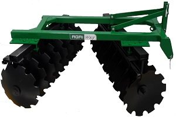Equipaggiamento standard
- Attacco a tre punti di II cat.
- Raschiatori regolabili su ciascun disco
- Dischi anteriori dentati et posteriori lisci
- Regolazione meccanica dell'angolo di lavoro
Equipaggiamento opzionale
- Dischi diam 610mm
- Dischi lisci anteriori e dischi dentati posteriori
- >Dischi touti dentati o touti lisci
Erpici a disco tandem
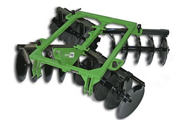Equipaggiamento standard
- Attacco a tre punti di II cat.
- Regolazione meccanica dell'angolo di lavoro
- Tutti i dischi normali o tutti i dischi dentati
- Rebbio centrale
- Raschiatori regolabili su ciascun disco
Equipaggiamento opzionale
- Dischi diam 610 mm (24 ‘’)
Aratri reversibili a disco
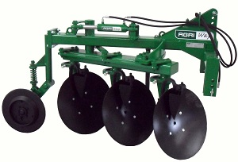Equipaggiamento standard
- Attacco a tre punti di II cat.
- Rotazione idraulica tramite cilindro
- Ruota solco regolabile
- Raschietto regolabile in ogni disco
- Regolaz verticale dei dischi in 3 posiz
- Piede di stazionamento
- Boccola cementata nelle articolazioni
Equipaggiamento opzionale
- Disci dentati
Aratri a disco portati
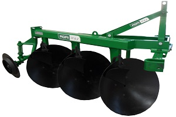Equipaggiamento standard
- Attacco a tre punti di II cat.
- Ruota solco regolabile
- Raschietto regolabile verticalmente su ciascun disco
- Piede di stazionamento
- Casehardened bushing in the articulations
Equipaggiamento opzionale
- Regolazione orizzontale dei dischi
- Disci dentati
- Ulteriore corpo a un solco con disco diam. Ø660-26
- Ulteriore corpo a un solco con disco of diam. Ø710-28
- Tipo riducibile
Assolcatori a disco portati
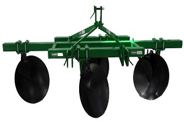Equipaggiamento standard
- Attacco a tre punti di II cat.
- Larghezza di lavoro regolabile
- Regolazione verticale e trasversale per ogni gruppo lavorante
- Dischi semplici (dentellati per DR2 / 22)
Equipaggiamento opzionale
- Kit di 2 raschiatori per DR2
- Kit di 4 raschiatori per DR4
- Kit di 6 raschiatori per DR6
- (kit non disponibile per DR2 / 22)
Dissodatore a dischi
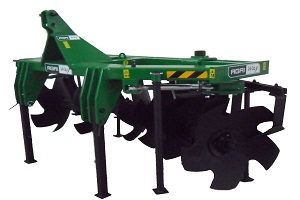Equipaggiamento standard
- II-IAttacco a tre punti di II cat.
- Dischi dentellati o agitati
- Raschietti rinforzati e regolabili
- Dischi del disco regolabili lungo il telaio
- Treni del disco reversibili per il modello BHH6-810C
- Supporti cuscinetti rinforzati
Equipaggiamento opzionale
- Protezione del cuscinetto
- Dischi imbullonati sul distanziale
Attrezzatura a versoio
Affossatori portati ad 1 elemento
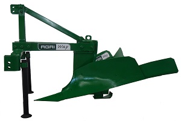Equipaggiamento standard
- Attacco a tre punti di II cat.
- Corpo con pinne regolabili
- Piede di stazionamento
Monobarra con corpi affossatori
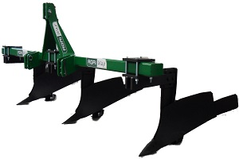Equipaggiamento standard
- Attacco a tre punti di II cat.
- Corpo con pinne regolabili
Equipaggiamento opzionale
- Set di due ruote di controllo della profondità
- Attacco a tre punti di IIi cat.
- Barra degli strumenti con lunghezza diversa
Affossatori transformabili
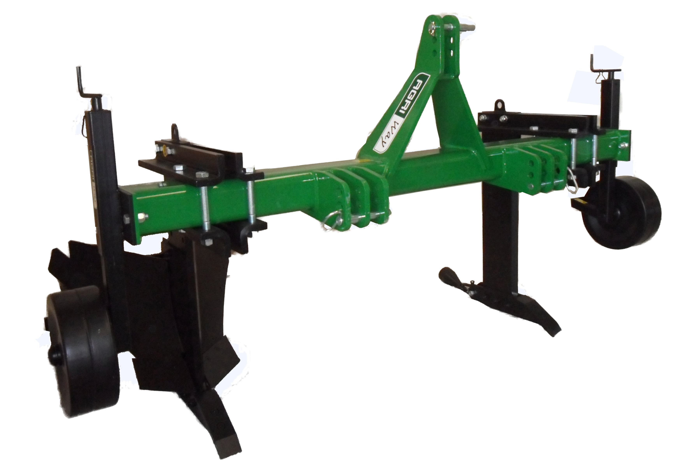Equipaggiamento standard
- Attacco a tre punti di II cat.
- Scavafossi convertibile nel dissodatore smontando i moldboards (per canna da zucchero)
- Corpo con pinne regolabili
- Profondità di lavoro regolabile
Equipaggiamento opzionale
- Set di due ruote di controllo della profondità
- Attacco a tre punti di IIi cat.
- Barra degli strumenti con lunghezza diversa
Aratri a versoio portati
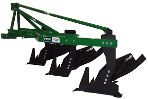Equipaggiamento standard
- Attacco a tre punti di II cat.
- Mulini cilindrici con barra / punto
- Blade a terra
- Attacco regolabili
Aratri portati reversibili
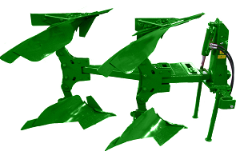Equipaggiamento standard
- Mulini cilindrici e punte a scalpello
- Testa con attacco oscillante
- Bulione di sicurezza
- Regolazione meccanica del primo solco
Equipaggiamento opzionale
- Avanvomeri a versoio
- Avanvomeri a disco
- Ruote di profondita in ferro
- Ruote di profondita in gomma
- Coltro da basso
Aratri convenzionale
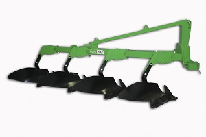Equipaggiamento standard
- Attacco a tre punti di II cat.
- Mulini AR5H o C16S
Equipaggiamento opzionale
- Ruota profondità RTS 600 X 9
Monobarre con corpi assolcatori
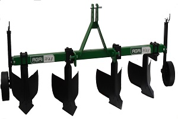Equipaggiamento standard
- Attacco a tre punti di II cat.
- Corpo con pinne regolabili
- Robusto telaio per TBR5
Equipaggiamento opzionale
- Set di due ruote di controllo della profondità
- Barra degli strumenti con lunghezza diversa
- Filaio meccanico
Monobarre con corpi assolcatori (2TBR2/SC series)
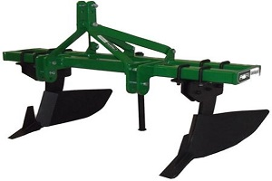Equipaggiamento standard
- Distanza interrow regolabile
- Corpo con pannelli di montaggio regolabili
- Protezione del bullone
- Lastre su ciascun corpo
Equipaggiamento opzionale
- Corpo centrale aggiuntivo senza versoio
Attrezzatura a denti
Ripuntatori portati idropneumatici
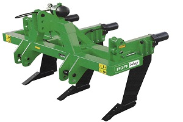Equipaggiamento standard
- Attacco a tre punti di IIi cat.
- Doppia cornice 150x150
- Steel blade 30 mm thick
- Punto intercambiabile 80x30
- Dispositivo di ripristino automatico idraulico
- Gioco inferiore 900 mm
Equipaggiamento opzionale
- Tempo aggiuntivo
Ripuntatori portati pesanti
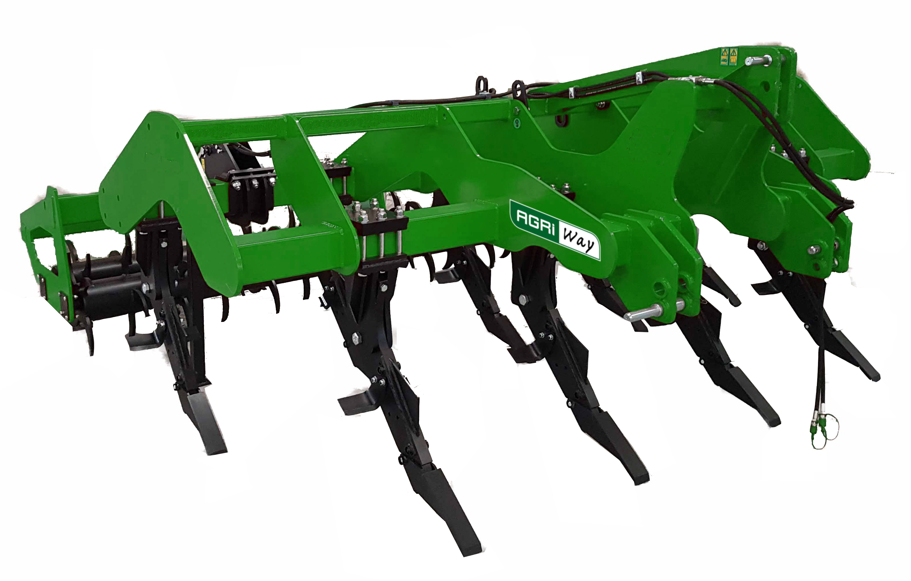Equipaggiamento standard
- Attacco a tre punti di IIi o III-IV cat.
- punte reversibili
Equipaggiamento opzionale
- Rulli posteriori singolo o doppio
- Rullo di diametro 600 mm
- Regolazione idraulica del rullo
- Ali di gambo con protezione
- Kit protezione laterale
Coltivatori tiller portati
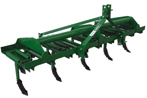Equipaggiamento standard
- Attacco a tre punti di I o II cat.
- Punte reversibili
Equipaggiamento opzionale
- Set di 2 ruote di controllo in ferro profondo
- Molle di tipo occhio
Coltivatori tiller portati
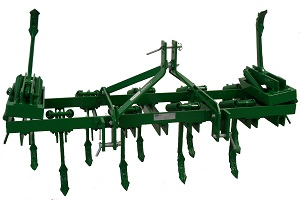Equipaggiamento standard
- Attacco a tre punti di II cat.
- punte reversibili
Equipaggiamento opzionale
- Set di 2 ruote di controllo in ferro profondo
- Molle di tipo occhio
Assolcatori su telaio bibarra (CC-VS/SC series)
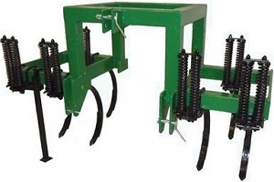Equipaggiamento standard
- Telaio con spazio vuoto centrale per il lavoro interposto
- Due treni denti (a L. H. e R. H.)
- Scalpello a dente singolo da 55x20 con doppia molla verticale e punta reversibile
- Denti fissati al telaio mediante morsetti a U.
Equipaggiamento opzionale
- Barra centrale rimovibile (per ottenere un telaio standard senza spazio vuoto)
Coltivatori intercalati monti

Prossimamente, contattaci per maggiori informazioni

A rotore
Trincia centrale e lateral
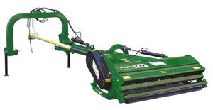Equipaggiamento standard
- Rullo posteriore
- Cobelli o mazzo
- Gruppo rinvio con note libera
- "CE" proteziono
- Protezione posteriore rimovibile e piede di stazionamento
- Spostamento e inclinazione idraulici(-65°/90°))
Tincia portati per lavori in vigneti
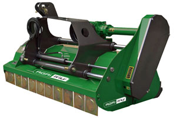Equipaggiamento standard
- Rulli posrteriori
- Cobelli o mazzo
- Gruppo rinvio con note libera
- "CE" proteziono
- Protezione posteriore rimovibile e piede di stazionamento
- Profilo basso e telaio laterale arrotondato per avvicinarsi alle piante
- Spostamento laterale meccanico o idraulico
- Raccolta di rastrelli
Equipaggiamento opzionale
- Contametri elettronici
Trinci portati
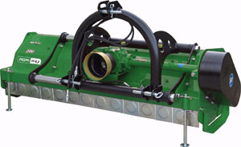Equipaggiamento standard
- Rulli posteriori
- Cobelli o mazzo
- Gruppo rinvio con note libera
- "CE" proteziono
- Protezione posteriore rimovibile e piede di stazionamento
Equipaggiamento opzionale
- Spostamento laterale meccanico o idraulico
- pattini di supporto regolabili
- Raccolta di rastrelli
- Spargimento di lame / flap, volanti (senza rullo) e contametri elettronici
Trinciastocchi, taglio con 2 lame orizzontali
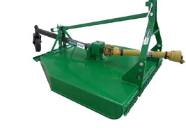Equipaggiamento standard
- Cardano giunto con sicurezza
- Tipo di altalena superiore oscillante
- Protezione posteriore e anteriore
- Spessore del telaio in acciaio
- Da 3600 a 4700 giri / min
Coltivatori rotanti per alberi rotanti impermeabili
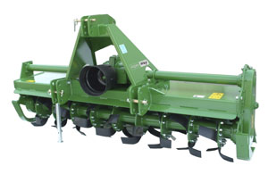Equipaggiamento standard
- Attacco a tre punti di II cat.
- Cambio a 4 marce
- Albero cardanico con frizione di sicurezza
- Trasmissione laterale con catena d'oro
Equipaggiamento opzionale
- Rulli con pic
- Regolazione idraulica del rullo
- Regolatore della molla del cofano e kit di aste
Light Rotary Cultivators
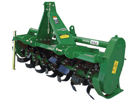Equipaggiamento standard
- Attacco a tre punti di I cat.
- Albero cardanico
- Trasmissione laterale con catena d'oro a ingranaggi
- 4 lame per flangia
Equipaggiamento opzionale
- Albero cardanico con frizione di sicurezza
- 6 lame per flangia
Fienagione
Falciatrici a dischi portate (DM series)
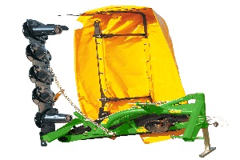Equipaggiamento standard
- Due lame per disco
- Albero cardanico
- Panno di copertura
- Buttoni di sicurezza
- sollevamento della barra di taglio
- 2 rulli in gomma nei modelli -C
Falciatrici bilama portate (BM series)
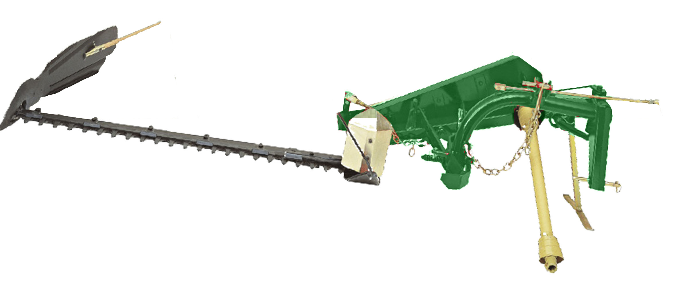Equipaggiamento standard
- Sistema di rilascio automatico di sicurezza
- Sollevamento barre per il trasporto
- Albero cardanico
Giro andanatore portato (RW series)
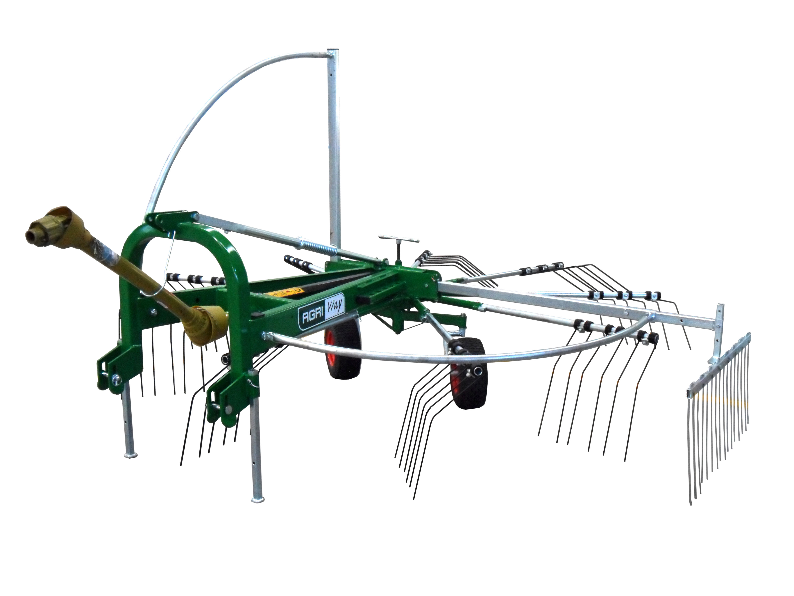Equipaggiamento standard
- Attacco a tre punti di Ii cat.
- Ruote pivotanti pneumatiche per modelli RW e tandem per modelli RWD
- Albero cardanico
- Piede di stazionamento
- Rastrello laterale
- Funzionamento: andana laterale per tutti i modelli - tornitura del fieno solo per RWD510
Equipaggiamento opzionale
- Ruote pivotanti in tandem serie RW
Altro
Retro-escavatori portati (BH Series)
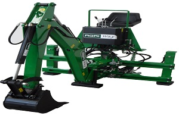Equipaggiamento standard
- IMPIANTO IDRAULICO INDIPENDENTE (pompa in ghisa, serbatoio dell'olio ecc.)
- Attacco a 3 punti (adattabilità per attacco a 5 punti)
- Rotazione di 180 ° mediante doppio cilindro; freno idraulico di fine corsa
- Stabilizzatori idraulici indipendenti
- Distributore idraulico con leve a campana
- Posizione di lavoro multipla con blocco idraulico (escluso BH160)
- Case Induriti e rettificati pini / boccole in tutte le articolazioni
Betonier portate (CM350)
Per la preparazione di calcestruzzo, miscelazione mangimi e lavaggio ortaggi.
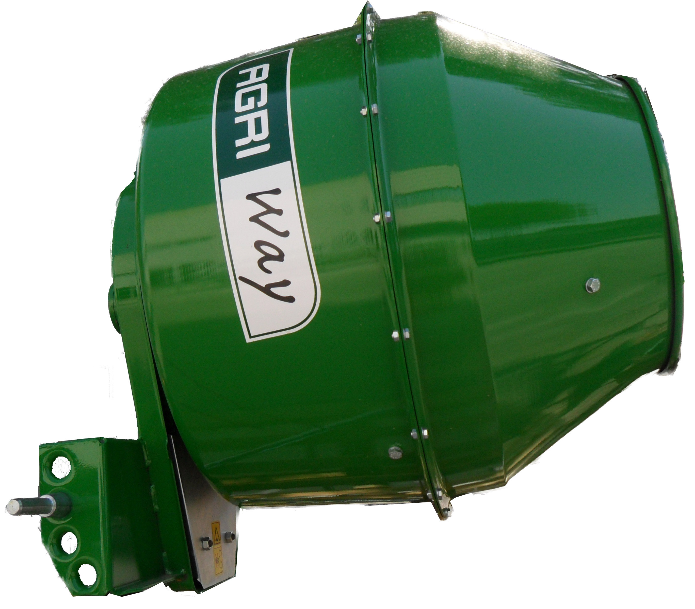Equipaggiamento standard
- Cono d’acciaio sp.3 mm imbullonato;
- Telaio con attacco universale di II cat. ;
- Martinetto idraulico per 3°punto;
- Giunto cardanico
Cassoncini portati (RP -F/-H)
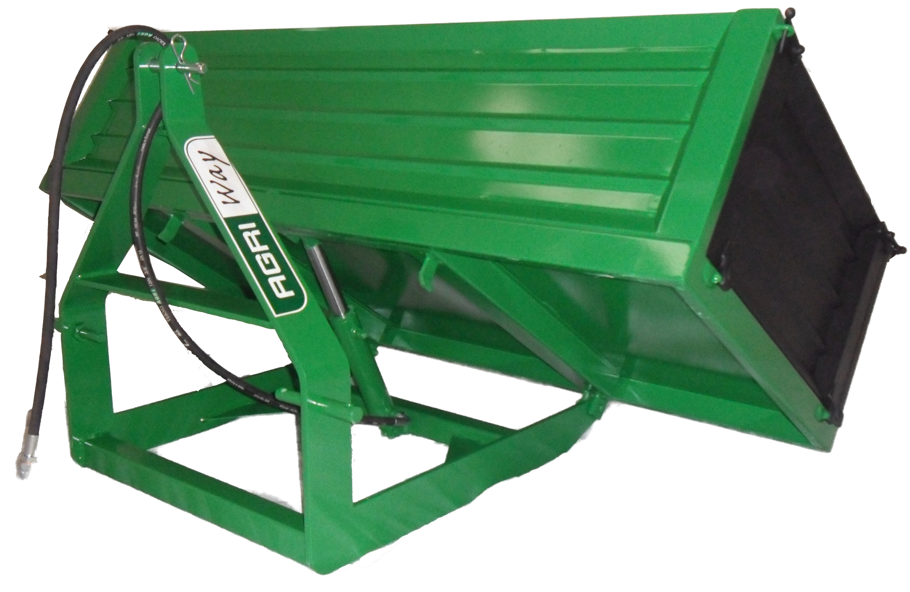Equipaggiamento standard
- La struttura in lamiera nervata;
- Sponde laterali e posteriore smontabili;
- Pianale fisso per i modelli RP-F;
- Pianale a ribaltamento posteriore idraulico per i modelli RP-H
Trivelle agricole portate (PHD)
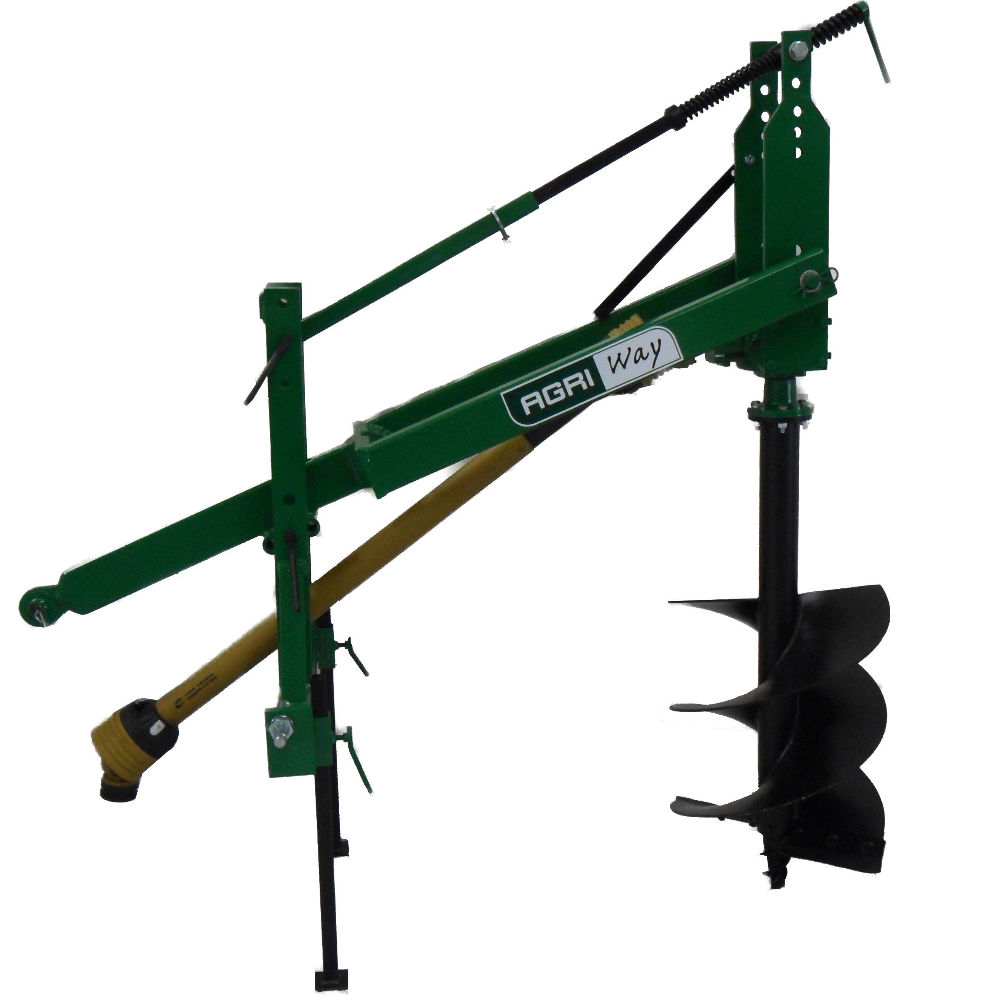Equipaggiamento standard
- Attacco a 3 punti;
- Stabilizzatore a parallelogramma registrabile;
- Cardano con bullone di sicurezza;
- Piedini di stazionamento;
- Coclee da 10-20-30-40-50-60cm di diametro;
Seminatrici mecchaniche portate tradizionali
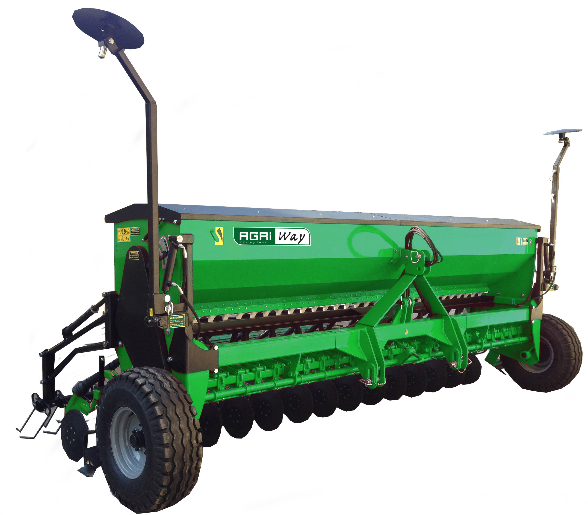Equipaggiamento standard
- Attacco a 3 punti di 2 cat;
- Assolcatori su due file;
- Variatore continuo di velocità (doppio su modelli seme & concime);
- Separatore interno tramoggia (per modelli con concime);
- Ruote esterne in gomma 600-16 (10.08 per modello da 4mt) con raschietti rompitraccia;
- Assolcatori a stivaletto o falcione;
- Regolazione meccanica profondità assolcatori;
- Indicatore livello seme;
- Erpice copriseme
Equipaggiamento opzionale
- Assolcatori a disco singolo o doppio;
- Segnafile idraulico;
- Pedano di carico;
- Impianto luci;
- Contaettari
- Rompitraccia
- File supplementari di assolcatori
Seminatrici mecchaniche portate monogerme
Per la semina di grossi semi quali mais, girasole, soja, fagiolini, sorgo eccetera.
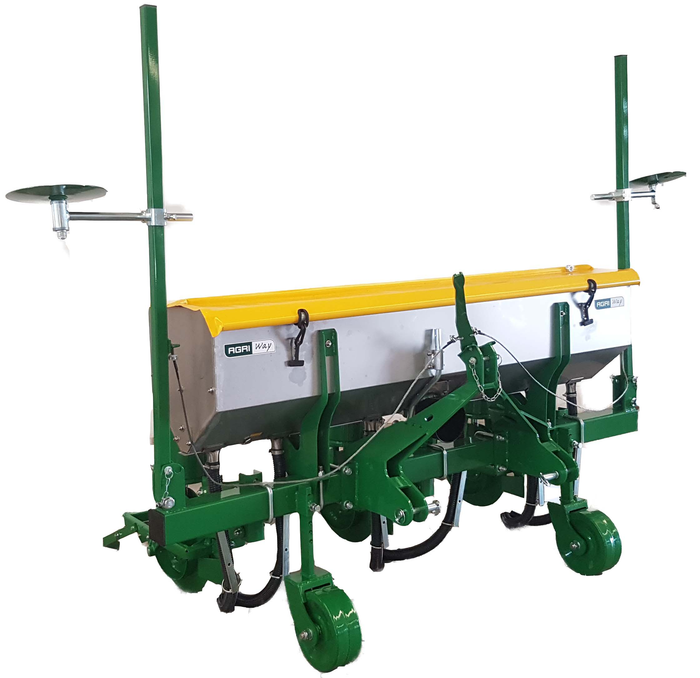Equipaggiamento standard
- Telaio fisso;
- Interfila regolabile (40-75 cm a 4,6km/h);
- Ruote di regolazione profondità in ferro;
- Segnafile meccanico;
- 3 set di dischi di semina;
- tramoggia inox per modelli combinati (trasmissione cardanica)
Equipaggiamento opzionale
- Set aggiuntivi dischi semina;
- Tramogge seme con capacità maggiorata
Rulli costipatori (TCRH)
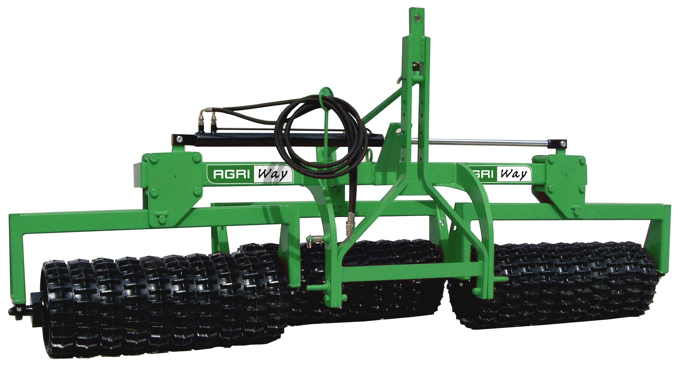Equipaggiamento opzionale
- Per modelli con sezioni lisce:
- - attacco portato-trainato;
- - 3 sezioni riempibili con acqua
- Ampia scelta per i modelli con dischi in ghisa:
- - attacco portato-trainato o trainato su ruote gommate a sollevamento idraulico;
- - 1 sezione o 3 sezioni
- - dischi dentati o cambridge
Rimorchi monoasse e biasse (DAT/SAT)
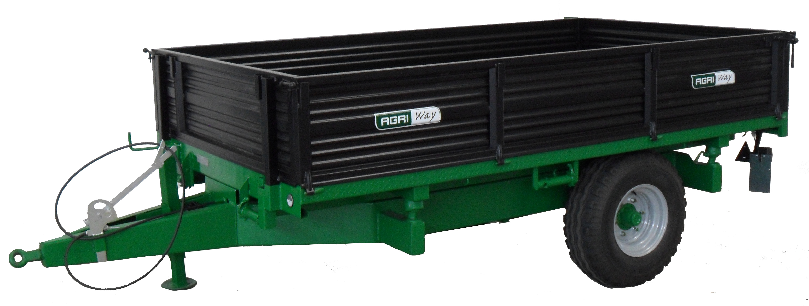Equipaggiamento standard
- Pianale in lamiera (liscia o bugnata);
- Ribaltamentro trilaterale idraulico;
- Sponde incernierate sfilabili;
- Piedino di stazionamento;
- Impianto luci e stop;
- Freno meccanico o idraulico in base ai modelli;
- Sospensioni a balestra solo per i biasse
Equipaggiamento opzionale
- Sovrasponde;
- Zincatura sponde;
- Cassetta porta-attezzi;
- Piedino di stazionamento idraulico
Lame livellatrice portate (RG/RGB)
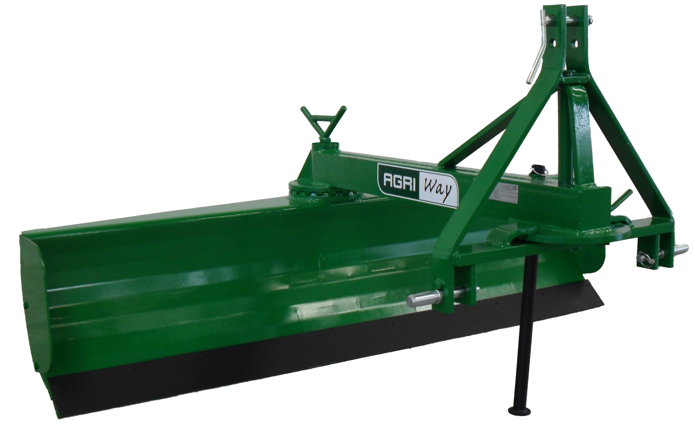Equipaggiamento standard
- Per serie RB: angolazione meccanica per telaio e lama;
- Per serie RGB: Martinetto sollevamento verticale (tilt-dozer - inclinazione 20°);
- Martinetto per regolazione porta-attrezzi (posizione offset)
- Martinetto per rotazione lama (rotazione 360°)
- Piede d’appoggio
Equipaggiamento opzionale
- Per serie RB: Coppia ruotine di profondità in ferro;
- Regolazione idraulica angolo lama Per serie RGB: Coppia ruotini in gomma
Spandiconcime portati monoventola
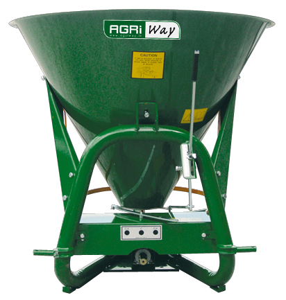Equipaggiamento standard
- Attacco a 3 punti di I cat;
- Distribuzione ad 1 disco con palette spargimento in inox;
- Larghezza spaglio 12mt;
- Cardano
- Tramoggia conica verniciata;
- Agitatore
- Leve per regolazione dosaggio e direzione spaglio
Equipaggiamento opzionale
- Tramoggia in plastica;
- Griglia corpi estranei
Spandiconcime portati biventola
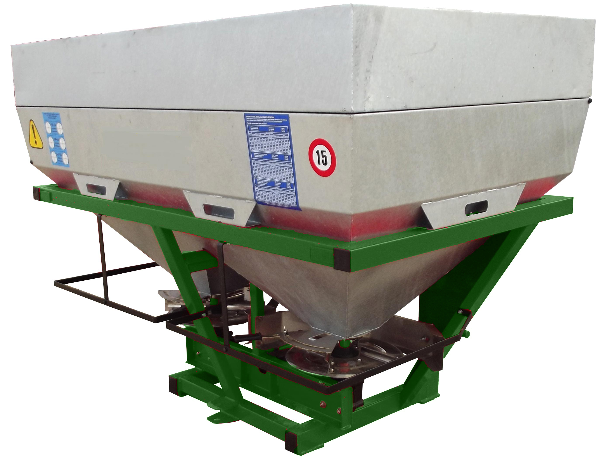Equipaggiamento standard
- Distribuzione doppiodisco (dischi spargimento e palette in inox);
- Larghezza spaglio 10-20mt;
- Cardano;
- Tramoggia rettangolare zincata a caldo;
- Griglia corpi estranei;
- Comando idraulico a distanza;
- Telo protezione
Equipaggiamento opzionale
- Tramoggia inox